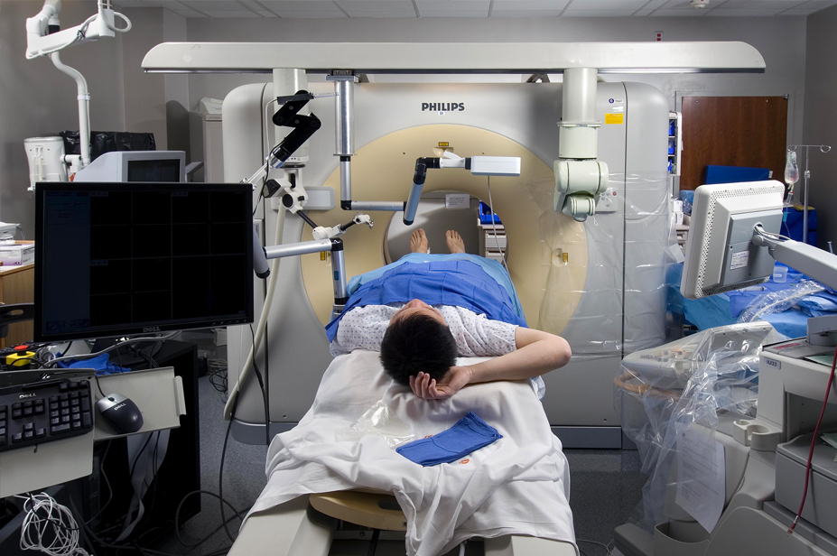
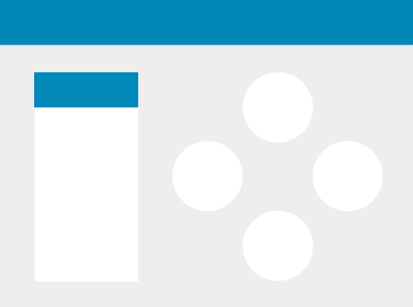
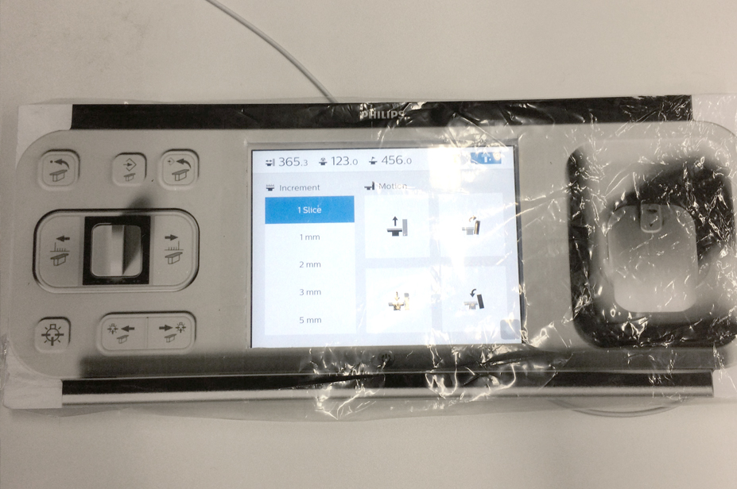
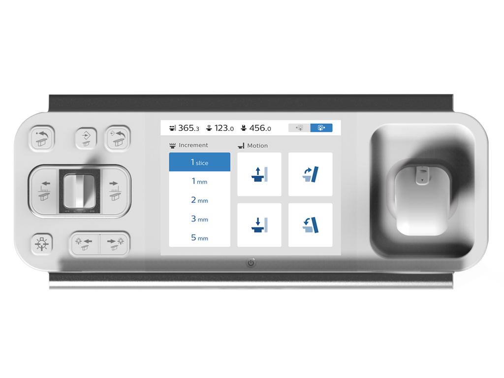

Interventional CT
Interventional CT Scanner gantry panel design
Interventional CT project was for UI/UX design for CT scanner gantry panel. Since the gantry panel consists of physical controls and a touchable screen panel, the focus of digital UI screen was finding a way of delivering the most straightforward and easy-to-understand user interface design reflecting the priorities of features.
Background
One of the big changes in interventional radiology over the last ten years has been the introduction of cross-sectional imaging tool such as interventional CT system. It allows doctors to visualize the placement of tumors for treatment with marginal safety and effectiveness.
 Interventional radiology's stereotactic frame is attached to a CT-gantry with hanging tools
The success of interventional CT is based on the correct positioning of needles and precise controls of it. Radiologist need to control one or more needles to scan patient’s body precisely, and it requires high accuracy and clearness.
To achieve correct control of interventional needle, radiologist should set the CT scanner table in the right position, move it precisely with the right increments. Any wrong operation can potentially cause the failure of examination. To achieve successful outcomes of the image screening procedures, gantry panel UI design aimed to deliver a clear interface with intuitive icons without unnecessary explanation
Design Concept
Information on the panel display includes the current position of CT table, the in/out increment control, as well as type of movement, i.e., table up and down, and CT machine tilt forward and backward.
Since the gantry panel could be placed in any position depending on the environment of CT room; it can be left or right side of CT scanner and it changes the direction of control, i.e., operation ‘move to right side’ can actually movement toward left side when the gantry is located in the right side of CT. Thus, UI should clarify the correct position of gantry panel.
The size of controls was also important factor of usability, since radiologists will use the control it with a transparent plastic bag covered due to hygiene issues. Under the such a condition, the visibility of individual control on digital screen wasn’t sufficiently secure, so design should ensure the basic usability by having a high color contrast with ergonomically enough size to see and touch with a distance; radiologists use it while standing up.
 Gantry panel covered with transparent plastic bagDesign Outcome
Design outcome includes a working prototype with pixel-perfect UI design with a concrete grid system for the future update, a splash screen, a guidance for button behaviors for different status.
